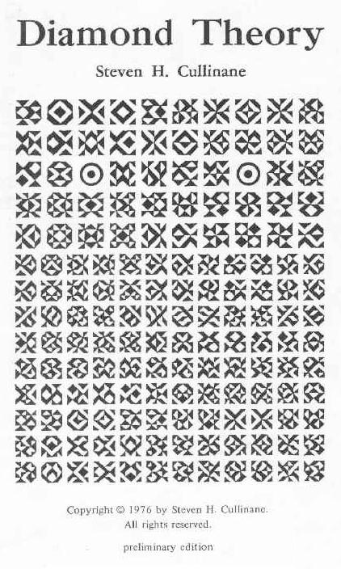

|
Finite Geometry Notes
|
The image at right below shows the cover of a booklet I wrote in 1976. This booklet details the implications of what I call the "diamond theorem," after the diamond figure in Plato's Meno dialogue. For the technical details of the diamond theorem, see my website Diamond Theory.
The site you are now viewing, Math16.com, offers a less formal treatment of philosophical and literary matters related to the diamond theorem.
The following quotation describes, and inspired, the picture on the Diamond Theory cover:
"Adorned with cryptic stones and sliding shines,
An immaculate personage in nothingness,
With the whole spirit sparkling in its cloth,
Generations of the imagination piled
In the manner of its stitchings, of its thread,
In the weaving round the wonder of its need,
And the first flowers upon it, an alphabet
By which to spell out holy doom and end,
A bee for the remembering of happiness."
-- Wallace Stevens, "The Owl in the Sarcophagus"
Another description of this picture may be found in the novel A Wind in the Door. A main character in this book is the (singular) cherubim named Proginoskes. A comment from the author:
"Thank you for the diamond theory. It does, indeed, look more like Proginoskes than any of the pictures on the book jackets."
-- Madeleine L'Engle, letter of November 28, 1976
A
Mathematician's Aesthetics
The
Diamond Archetype
Aesthetics of
Parallelism
Geometry of the
I Ching
The
Non-Euclidean Revolution.
This book by Richard J. Trudeau, with a brief introduction
by H. S. M. Coxeter, traces in the recent history of
geometry the conflict between what Trudeau calls the
"Diamond Theory of truth" and the "Story Theory of truth"
-- known to more traditional philosophers as "realism" and
"nominalism."
Plato's
Diamond Revisited
Ivars Peterson's Nov. 27, 2000 column "Square of the
Hypotenuse" which discusses the diamond figure as used by
Pythagoras (perhaps) and Plato. Other references to the use
of Plato's diamond in the proof of the Pythagorean
theorem:
Meaning and the
Problem of Universals
A highly rated site on Logic and Ontology in the Google Web
Directory.
"You will all
know that in the Middle Ages there were supposed to be
various classes of angels.... these hierarchized celsitudes
are but the last traces in a less philosophical age of the
ideas which Plato taught his disciples existed in the
spiritual world."
-- Charles Williams, page 31, Chapter Two, "The Eidola and
the Angeli," in The Place of the Lion (1933),
reprinted in 1991 by Eerdmans Publishing
For Williams's discussion of Divine Universals (i.e., angels), see Chapter Eight of The Place of the Lion.
"People have
always longed for truths about the world -- not logical
truths, for all their utility; or even probable truths,
without which daily life would be impossible; but
informative, certain truths, the only 'truths' strictly
worthy of the name. Such truths I will call 'diamonds';
they are highly desirable but hard to find....The happy
metaphor is Morris Kline's in Mathematics in Western
Culture (Oxford, 1953), p. 430."
-- Richard J. Trudeau, The Non-Euclidean Revolution,
Birkhauser Boston, 1987, pages 114 and 117
"A new
epistemology is emerging to replace the Diamond Theory of
truth. I will call it the 'Story Theory' of truth: There
are no diamonds. People make up stories about what they
experience. Stories that catch on are called 'true.' The
Story Theory of truth is itself a story that is catching
on. It is being told and retold, with increasing frequency,
by thinkers of many stripes.... My own viewpoint is the
Story Theory.... I concluded long ago that each enterprise
contains only stories (which the scientists call 'models of
reality'). I had started by hunting diamonds; I did find
dazzlingly beautiful jewels, but always of human
manufacture."
-- Richard J. Trudeau, The Non-Euclidean Revolution,
Birkhauser Boston, 1987, pages 256 and 259
Trudeau's
confusion seems to stem from the nominalism of W. V. Quine,
which in turn stems from Quine's appalling ignorance of the
nature of geometry. Quine thinks that the geometry of
Euclid dealt with "an emphatically empirical subject
matter" -- "surfaces, curves, and points in real space."
Quine says that Euclidean geometry lost "its old status of
mathematics with a subject matter" when Einstein
established that space itself, as defined by the paths of
light, is non-Euclidean. Having totally misunderstood the
nature of the subject, Quine concludes that after Einstein,
geometry has become "uninterpreted mathematics," which is
"devoid not only of empirical content but of all question
of truth and falsity." (From Stimulus to Science,
Harvard University Press, 1995, page 55)
-- S. H. Cullinane, December 12, 2000
The correct statement of the relation between geometry and the physical universe is as follows:
"The contrast
between pure and applied mathematics stands out most
clearly, perhaps, in geometry. There is the science of pure
geometry, in which there are many geometries: projective
geometry, Euclidean geometry, non-Euclidean geometry, and
so forth. Each of these geometries is a model, a
pattern of ideas, and is to be judged by the interest and
beauty of its particular pattern. It is a map or
picture, the joint product of many hands, a partial
and imperfect copy (yet exact so far as it extends) of a
section of mathematical reality. But the point which is
important to us now is this, that there is one thing at any
rate of which pure geometries are not pictures, and
that is the spatio-temporal reality of the physical world.
It is obvious, surely, that they cannot be, since
earthquakes and eclipses are not mathematical
concepts."
-- G. H. Hardy, section 23, A Mathematician's
Apology, Cambridge University Press, 1940
"It's a thing
that nonmathematicians don't realize. Mathematics is
actually an aesthetic subject almost entirely."
-- John H. Conway, quoted on page 165, Notices of the
American Mathematical Society, February 2001.
"There are almost
as many different constructions of M24 as there
have been mathematicians interested in that most
remarkable of all finite groups."
-- John H. Conway in Sphere Packings, Lattices, and
Groups, third edition, Springer-Verlag, 1999
"The
miraculous enters.... When we investigate these
problems, some fantastic things happen.... At one point
while working on this book we even considered adopting a
special abbreviation for 'It is a remarkable fact that,'
since this phrase seemed to occur so often. But in fact we
have tried to avoid such phrases and to maintain a
scholarly decorum of language."
-- John H. Conway and N. J. A. Sloane, Sphere
Packings..., preface to first edition (1988)
Many actions of
the Mathieu group M24 may best be understood by
splitting the 24-element set on which it acts into a "trio"
of three interchangeable 8-element sets -- "octads," as in
the "Miracle Octad Generator" of R. T. Curtis. (See
chapters 10 and 11 of the above book by Conway and Sloane.)
It is a remarkable fact that the characteristics of such a
trio are not wholly unlike those of the more famous
structure described below by Saint Bonaventure.
-- S. H. Cullinane, March 1, 2001
"Beware lest you believe that you can comprehend the Incomprehensible, for there are six characteristics (of the Trinity) which will lead the eye of the mind to dumbstruck admiration. Thus, there is
"Was there really
a cherubim waiting at the star-watching rock...?
Was he real?
What is real?"
-- Madeleine L'Engle, A Wind in the Door, Farrar,
Straus and Giroux, 1973, conclusion of Chapter Three, "The
Man in the Night"
"Oh,
Euclid, I suppose."
-- Madeleine L'Engle, A Wrinkle in Time, Farrar,
Straus and Giroux, 1962, conclusion of Chapter Five, "The
Tesseract"
For more on
philosophy and Quine, and also theology and angels, see
Is
Nothing Sacred? and Midsummer
Eve's Dream.
For a small memorial to Quine, see On
Linguistic Creation.
View notes (including the above on philosophy and Quine, etc.) from Author's Personal Journal
"It is a good
light, then, for those
That know the ultimate Plato,
Tranquillizing with this jewel
The torments of confusion."
- Wallace Stevens,
Collected Poetry and Prose, page 21,
The Library of America, 1997